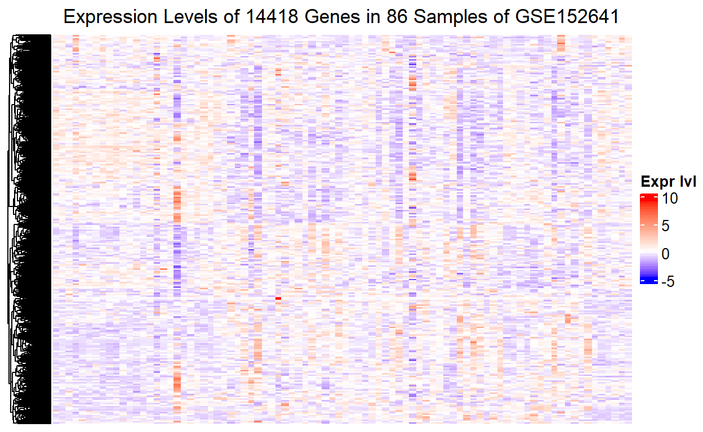

Perform differential expression analysis and visualise differentially expressed genes in R.
The dataset being used here is GSE152641(Thair et al. 2021) Before differential expression analysis, we have done:
To load the processed RNA-seq data:
We will be using ComplexHeatmap(Gu, Eils, and Schlesner 2016) for heatmap visualisation of gene expression and circlize(Gu et al. 2014) to generate a colour gredient indicating expression levels of the genes:
if (!requireNamespace("circlize", quietly = TRUE))
install.packages("circlize")
if (!requireNamespace("ComplexHeatmap", quietly = TRUE))
BiocManager::install("ComplexHeatmap")
We write a function to create a color palette using circlize:
heatmap_cols <- function(mat, neg = "blue", zero = "white", pos = "red") {
# Purpose:
# Helper function to create a transition colour gradient for a heatmap
# Parameters:
# mat: A RNA-seq count matrix
# neg: colour for negative expression values, green by default
# zero: colour for expression values of zero, black by default
# pos: colour for positive expression values, red by default
# Value:
# cols: a vector of colour gradient indicating expression level
if (min(mat) == 0) { ## when the lowest expression value is 0
cols <- circlize::colorRamp2(c(min(mat), max(mat)),
c(zero, pos)
)
} else { ## when the lowest expression value is negative
cols <- circlize::colorRamp2(c(min(mat), 0, max(mat)),
c(neg, zero, pos)
)
}
return(cols)
}
One might ask, how could an expression value be negative? Before answering that, if we directly plot out the gene counts in a heatmap:
ComplexHeatmap::Heatmap(
matrix = normalised_counts,
column_title = paste("Expression Levels of",
as.character(nrow(normalised_counts)),
"Genes in GSE152641"),
name = "Expr lvl",
cluster_rows = TRUE,
cluster_columns = FALSE,
show_row_dend = TRUE,
show_column_dend = TRUE,
col = heatmap_cols(normalised_counts),
show_column_names = FALSE,
show_row_names = FALSE,
show_heatmap_legend = TRUE
)
We can see nothing. The reason being is that most of the expression values were masked by some expression values that are extremely high. To explain this in a more intuitive way:
gene_dist <- apply(normalised_counts, MARGIN = 1, FUN = hist, plot = FALSE)
gene_col <- rainbow(n = length(gene_dist), alpha = 0.5)
xlim <- 0; ylim <- 0;
for (i in seq_along(gene_dist)) {
xlim <- range(c(xlim, gene_dist[[i]]$breaks))
ylim <- range(c(ylim, gene_dist[[i]]$counts))
}
## Find the row that has the max count
gene_max_count <- which(normalised_counts == max(normalised_counts),
arr.ind = TRUE)[1]
plot(x = xlim,
y = ylim,
type = "n",
main = paste("Distributions for Expression Values of",
nrow(normalised_counts), "Genes",
"in", ncol(normalised_counts), "Samples"),
cex.main = 0.95,
xlab = "TMM normalised CPM",
ylab = "Frequency"
)
for (i in seq_along(gene_dist)){
plot(gene_dist[[i]],
col = gene_col[i],
lty = "blank",
add = TRUE
)
}
legend("topright",
legend = rownames(normalised_counts)[gene_max_count],
fill = gene_col[gene_max_count],
border = gene_col[gene_max_count],
cex = 0.75
)
As shown by the distributions, while only a few genes have high expression values, the majority of the genes have counts far below 20000. A few extremely high expression values can mask most of the other expression values in the heatmap. This is why the heatmap above showing virtually all the genes have the same level of expression in the 86 samples. To show the difference in expression levels between genes, we need to transform the expression values for each gene to comparable scales.
A common practice before ploting RNA-seq data in a heatmap is to standardise the normalised counts of a gene across all samples to z-scores, that is, calculate z-scores by genes(rows):
The heatmap after z-scoring:
ComplexHeatmap::Heatmap(
matrix = z_mat,
column_title = paste("Expression Levels of",
as.character(nrow(normalised_counts)),
"Genes in 86 Samples of GSE152641"),
name = "Expr lvl",
cluster_rows = TRUE,
cluster_columns = FALSE,
show_row_dend = TRUE,
show_column_dend = TRUE,
col = heatmap_cols(z_mat),
show_column_names = FALSE, ## Too many samples. Will be messy if show them
show_row_names = FALSE,
show_heatmap_legend = TRUE
)

The expression levels of the 14418 genes now become visible. However, we cannot tell which part of the heatmap corresponds to which sample, or more importantly which group of the 86 samples. Without this piece of information, it will be impossible to show the difference in gene expression level between the healthy control and the COVID-19 patients in the heatmap.
The HeatmapAnnotation object in ComplexHeatmap is dedicated to this purpose. The constructor method for HeatmapAnnotation requires two input arguments: a data frame with a column of group names for each sample and a list with a named vector of colour codes:
To present the annotation for the sample groups in a more organised way, we can re-arrange the column order of the count matrix by groups:
And to create a heatmap annotation object using the constructor method:
ha <- ComplexHeatmap::HeatmapAnnotation(
df = data.frame(Sample = samples$group[group_order]),
col = list(Sample = ha_cols)
)
The heatmap with an annotation for the sample groups:
ComplexHeatmap::Heatmap(
matrix = z_mat[ , group_order],
column_title = paste("Expression Levels of",
as.character(nrow(normalised_counts)),
"Genes in 86 Samples of GSE152641"),
name = "Expr lvl",
cluster_rows = TRUE,
cluster_columns = FALSE,
show_row_dend = TRUE,
show_column_dend = TRUE,
col = heatmap_cols(z_mat),
show_column_names = FALSE, ## Too many samples. Will be messy if show them
show_row_names = FALSE,
show_heatmap_legend = TRUE,
top_annotation = ha ## put annotation for sample groups at the top
)
Finally, putting everything above together, we can write a function to avoid duplicate code:
plotHeatMap <- function(deg = integer(0),
m,
samples,
title = "",
cols = c("#B00020", "#008B00")) {
# Purpose:
# Ad-hoc function to standardise values in the input matrix to Z-scores,
# and generate a heatmap plot for gene expression with samples ordered
# by their groups and annotated.
# Parameters:
# deg : a vector of differentially expressed genes
# m : RNA-seq count matrix
# samples:
# A dataframe specifying to which group a sample belongs.
# Note that it only supports samples divided into 2 groups:
# control and experimental
# title : Title for the heatmap
# cols :
# Colours to annotate the heatmap by groups.
# Use preset colours if not supplied.
# Value:
# gene_heatmap: A heatmap object
require(ComplexHeatmap)
# Row normalisation/standardisation to Z-scores
if (length(deg) == 0) {
m <- t(
scale(
t(m) # transpose matrix => row = samples, col = genes
) # convert values of each column(gene) to Z scores
) # transpose the transposed matrix => row = genes, col = samples
} else {
m <- t(scale(t(m[which(rownames(m) %in% deg), ])))
}
# Get group names of samples
groups <- levels(factor(samples$group))
# Sample order by group
group_order <- c(which(samples$group == groups[2]),
which(samples$group == groups[1]))
# Annotate heatmap by groups
ha_cols <- cols
names(ha_cols) <- groups
ha <- ComplexHeatmap::HeatmapAnnotation(
df = data.frame(Sample = samples$group[group_order]),
col = list(Sample = ha_cols)
)
# Create a heatmap object
gene_heatmap <- ComplexHeatmap::Heatmap(
matrix = m[ , group_order],
column_title = title,
name = "Expr lvl",
cluster_rows = TRUE,
cluster_columns = FALSE,
show_row_dend = TRUE,
show_column_dend = TRUE,
col = heatmap_cols(m),
show_column_names = FALSE,
show_row_names = FALSE,
show_heatmap_legend = TRUE,
top_annotation = ha
)
return(gene_heatmap)
}
We hypothesise that COVID-19 status of samples was the only factor contributing to differential gene expression. Therefore, we model on group (status COVID-19 and healthy control) such that fitting this design matrix will tell us how the COVID-19 status of a sample explains his/her expression levels of the genes.
model_design <- model.matrix(~group, data = samples)
| (Intercept) | groupHealthy control | |
|---|---|---|
| GSM4622627 | 1 | 1 |
| GSM4622628 | 1 | 1 |
| GSM4622629 | 1 | 1 |
| GSM4622630 | 1 | 1 |
| GSM4622631 | 1 | 1 |
| GSM4622632 | 1 | 1 |
| GSM4622633 | 1 | 1 |
| GSM4622634 | 1 | 1 |
| GSM4622635 | 1 | 1 |
| GSM4622636 | 1 | 1 |
| GSM4622637 | 1 | 1 |
| GSM4622638 | 1 | 1 |
| GSM4622639 | 1 | 1 |
| GSM4622640 | 1 | 1 |
| GSM4622641 | 1 | 1 |
| GSM4622642 | 1 | 1 |
| GSM4622643 | 1 | 1 |
| GSM4622644 | 1 | 1 |
| GSM4622645 | 1 | 0 |
| GSM4622646 | 1 | 0 |
| GSM4622647 | 1 | 0 |
| GSM4622648 | 1 | 0 |
| GSM4622649 | 1 | 0 |
| GSM4622650 | 1 | 0 |
| GSM4622651 | 1 | 0 |
| GSM4622652 | 1 | 0 |
| GSM4622653 | 1 | 0 |
| GSM4622654 | 1 | 0 |
| GSM4622655 | 1 | 0 |
| GSM4622656 | 1 | 0 |
| GSM4622657 | 1 | 0 |
| GSM4622658 | 1 | 0 |
| GSM4622659 | 1 | 0 |
| GSM4622660 | 1 | 0 |
| GSM4622661 | 1 | 0 |
| GSM4622662 | 1 | 0 |
| GSM4622663 | 1 | 0 |
| GSM4622664 | 1 | 0 |
| GSM4622665 | 1 | 0 |
| GSM4622666 | 1 | 0 |
| GSM4622667 | 1 | 0 |
| GSM4622668 | 1 | 0 |
| GSM4622669 | 1 | 0 |
| GSM4622670 | 1 | 0 |
| GSM4622671 | 1 | 0 |
| GSM4622672 | 1 | 0 |
| GSM4622673 | 1 | 0 |
| GSM4622674 | 1 | 0 |
| GSM4622675 | 1 | 0 |
| GSM4622676 | 1 | 0 |
| GSM4622677 | 1 | 0 |
| GSM4622678 | 1 | 0 |
| GSM4622679 | 1 | 0 |
| GSM4622680 | 1 | 0 |
| GSM4622681 | 1 | 0 |
| GSM4622682 | 1 | 0 |
| GSM4622683 | 1 | 0 |
| GSM4622684 | 1 | 0 |
| GSM4622685 | 1 | 0 |
| GSM4622686 | 1 | 0 |
| GSM4622687 | 1 | 0 |
| GSM4622688 | 1 | 0 |
| GSM4622689 | 1 | 0 |
| GSM4622690 | 1 | 0 |
| GSM4622691 | 1 | 0 |
| GSM4622692 | 1 | 0 |
| GSM4622693 | 1 | 0 |
| GSM4622694 | 1 | 0 |
| GSM4622695 | 1 | 0 |
| GSM4622696 | 1 | 0 |
| GSM4622697 | 1 | 0 |
| GSM4622698 | 1 | 0 |
| GSM4622699 | 1 | 0 |
| GSM4622700 | 1 | 0 |
| GSM4622701 | 1 | 0 |
| GSM4622702 | 1 | 0 |
| GSM4622703 | 1 | 0 |
| GSM4622704 | 1 | 0 |
| GSM4622705 | 1 | 0 |
| GSM4622706 | 1 | 0 |
| GSM4622707 | 1 | 1 |
| GSM4622708 | 1 | 1 |
| GSM4622709 | 1 | 1 |
| GSM4622710 | 1 | 1 |
| GSM4622711 | 1 | 1 |
| GSM4622712 | 1 | 1 |
Note that samples is a data frame labeling samples with their groups:
| sample | group | |
|---|---|---|
| GSM4622627 | IMX_sample00001 | Healthy control |
| GSM4622628 | IMX_sample00002 | Healthy control |
| GSM4622629 | IMX_sample00003 | Healthy control |
| GSM4622630 | IMX_sample00004 | Healthy control |
| GSM4622631 | IMX_sample00005 | Healthy control |
| GSM4622632 | IMX_sample00006 | Healthy control |
| GSM4622633 | IMX_sample00007 | Healthy control |
| GSM4622634 | IMX_sample00008 | Healthy control |
| GSM4622635 | IMX_sample00009 | Healthy control |
| GSM4622636 | IMX_sample00010 | Healthy control |
| GSM4622637 | IMX_sample00011 | Healthy control |
| GSM4622638 | IMX_sample00012 | Healthy control |
| GSM4622639 | IMX_sample00013 | Healthy control |
| GSM4622640 | IMX_sample00014 | Healthy control |
| GSM4622641 | IMX_sample00015 | Healthy control |
| GSM4622642 | IMX_sample00016 | Healthy control |
| GSM4622643 | IMX_sample00017 | Healthy control |
| GSM4622644 | IMX_sample00018 | Healthy control |
| GSM4622645 | IMX_sample00019 | COVID19 |
| GSM4622646 | IMX_sample00020 | COVID19 |
| GSM4622647 | IMX_sample00021 | COVID19 |
| GSM4622648 | IMX_sample00022 | COVID19 |
| GSM4622649 | IMX_sample00023 | COVID19 |
| GSM4622650 | IMX_sample00024 | COVID19 |
| GSM4622651 | IMX_sample00025 | COVID19 |
| GSM4622652 | IMX_sample00026 | COVID19 |
| GSM4622653 | IMX_sample00027 | COVID19 |
| GSM4622654 | IMX_sample00028 | COVID19 |
| GSM4622655 | IMX_sample00029 | COVID19 |
| GSM4622656 | IMX_sample00030 | COVID19 |
| GSM4622657 | IMX_sample00031 | COVID19 |
| GSM4622658 | IMX_sample00032 | COVID19 |
| GSM4622659 | IMX_sample00033 | COVID19 |
| GSM4622660 | IMX_sample00034 | COVID19 |
| GSM4622661 | IMX_sample00035 | COVID19 |
| GSM4622662 | IMX_sample00036 | COVID19 |
| GSM4622663 | IMX_sample00037 | COVID19 |
| GSM4622664 | IMX_sample00038 | COVID19 |
| GSM4622665 | IMX_sample00039 | COVID19 |
| GSM4622666 | IMX_sample00040 | COVID19 |
| GSM4622667 | IMX_sample00041 | COVID19 |
| GSM4622668 | IMX_sample00042 | COVID19 |
| GSM4622669 | IMX_sample00043 | COVID19 |
| GSM4622670 | IMX_sample00044 | COVID19 |
| GSM4622671 | IMX_sample00045 | COVID19 |
| GSM4622672 | IMX_sample00046 | COVID19 |
| GSM4622673 | IMX_sample00047 | COVID19 |
| GSM4622674 | IMX_sample00048 | COVID19 |
| GSM4622675 | IMX_sample00049 | COVID19 |
| GSM4622676 | IMX_sample00050 | COVID19 |
| GSM4622677 | IMX_sample00051 | COVID19 |
| GSM4622678 | IMX_sample00052 | COVID19 |
| GSM4622679 | IMX_sample00053 | COVID19 |
| GSM4622680 | IMX_sample00054 | COVID19 |
| GSM4622681 | IMX_sample00055 | COVID19 |
| GSM4622682 | IMX_sample00056 | COVID19 |
| GSM4622683 | IMX_sample00057 | COVID19 |
| GSM4622684 | IMX_sample00058 | COVID19 |
| GSM4622685 | IMX_sample00059 | COVID19 |
| GSM4622686 | IMX_sample00060 | COVID19 |
| GSM4622687 | IMX_sample00061 | COVID19 |
| GSM4622688 | IMX_sample00062 | COVID19 |
| GSM4622689 | IMX_sample00063 | COVID19 |
| GSM4622690 | IMX_sample00064 | COVID19 |
| GSM4622691 | IMX_sample00065 | COVID19 |
| GSM4622692 | IMX_sample00066 | COVID19 |
| GSM4622693 | IMX_sample00067 | COVID19 |
| GSM4622694 | IMX_sample00068 | COVID19 |
| GSM4622695 | IMX_sample00069 | COVID19 |
| GSM4622696 | IMX_sample00070 | COVID19 |
| GSM4622697 | IMX_sample00071 | COVID19 |
| GSM4622698 | IMX_sample00072 | COVID19 |
| GSM4622699 | IMX_sample00073 | COVID19 |
| GSM4622700 | IMX_sample00074 | COVID19 |
| GSM4622701 | IMX_sample00075 | COVID19 |
| GSM4622702 | IMX_sample00076 | COVID19 |
| GSM4622703 | IMX_sample00077 | COVID19 |
| GSM4622704 | IMX_sample00078 | COVID19 |
| GSM4622705 | IMX_sample00079 | COVID19 |
| GSM4622706 | IMX_sample00080 | COVID19 |
| GSM4622707 | IMX_sample00081 | Healthy control |
| GSM4622708 | IMX_sample00082 | Healthy control |
| GSM4622709 | IMX_sample00083 | Healthy control |
| GSM4622710 | IMX_sample00084 | Healthy control |
| GSM4622711 | IMX_sample00085 | Healthy control |
| GSM4622712 | IMX_sample00086 | Healthy control |
We first use edgeR(Robinson, McCarthy, and Smyth 2009)(McCarthy, Chen, and Smyth 2012) to estimate the dispersion. Note that edgeR stores data in a DGEList object and perform analyses on it:
d <- edgeR::DGEList(counts = normalised_counts,
group = samples$group)
d <- edgeR::estimateDisp(d, model_design) # dispersion of normalised count
fit_qlm <- edgeR::glmQLFit(d, model_design)
In this step, QL dispersion was estimated with edgeR(Robinson, McCarthy, and Smyth 2009)(McCarthy, Chen, and Smyth 2012) by fitting a QL negative binomial (NB) generalised linear model (glm) to the DGEList data containing the normalised counts and the estimated NB dispersions (visualised with the BCV and the mean-variance plot), along with the design matrix we just created.
We then use the fitted result to conduct genewise QL F-test for the coefficients of our defined sample groups.
qlf_SARS2vsHC <- edgeR::glmQLFTest(fit_qlm, coef = colnames(model_design)[2])
This step calculates the p-values for each of the genes in our expression set.
Extract the top differentially expressed tags ranked by p-values from the result of the QL F-test and display the number of genes that passed the correction:
| Number of genes with p-value < 0.05 | Number of genes that pass after correction |
|---|---|
| 7805 | 6856 |
The threshold for showing statistically significant evidence for differential expression was set to \(p < 0.05\) for each gene. This means genes that are captured only have less 5% chance to show such differences in expression between groups if they were non-differentially expressed genes.
Note that edgeR by default uses the false discovery rate (FDR/Benjamini-Hochberg) method to correct p-values for false positive results. This method was applied because we need to control for the the liklihood of false positive results that would increase by chance with the increasing number of tests performed. The threshold for the corrected p-value (FDR) is also set to be \(<0.05\) to capture genes that have false positive results for fewer than 5% of the significant tests.
After hypothesis testing for detecting differentially expressed genes, it is of interest to compare the fold changes against the statistical significance levels. Commonly used to visualise this comparison for two treatment conditions is the volcano plot, where the horizontal dimension is the fold change between the two groups on the base-2 log scale, and the vertical dimension is the adjusted P-values on the negative base-10 log scale.
Another plot often used in interpreting the results of differential gene expression analysis is the MA plot, where the horizontal dimension is the mean of normalised gene counts (A) and the vertical dimension the fold changes, both on the base-2 log scale.(McDermaid et al. 2018) However, a volcano plot is a more preferable option to an MA plot for visualising DGE results, because an MA plot does not consider the association between the results of multiple hypothesis testing and the changes in expression levels between the two groups.
To create volcano plots with base R, we can write a simple function:
plotVolcano <- function(df, title, gene_of_interest = integer(0)) {
# Purpose:
# Plot a vocanol plot conveniently with highlighted genes of interest.
# Parameters:
# df: A dataframe dedicated to this dataset,
# must include the following ordered columns, regardless of names:
# column 1: HGNC gene symbol
# column 2: Fold change on log2 scale
# column 3: negated P-value on log10 scale
# title: title of the plot
# gene_of_interst:
# A vector of genes to highlight, optional
# Value:
# result: A volcano plot with genes of interest highlighted.
cols <- c("insig" = "grey",
"sig" = "#2cbe88",
"highlight" = "#d03b41")
df$colour <- cols["insig"]
sig <- which(df[ , 3] > -log10(0.05))
df[sig, "colour"] <- cols["sig"]
highlight <- integer(0)
if (length(gene_of_interest) > 0)
highlight <- which(df[ , 1] %in% gene_of_interest)
x <- df[ ,2]
y <- df[ ,3]
if (length(highlight) > 0)
df[highlight, "colour"] <- cols["highlight"]
plot(x = df[-highlight, 2],
y = df[-highlight, 3],
col = df[-highlight, "colour"],
xlab = expression("Log"[2]*" fold change"),
ylab = expression("-Log"[10]*" P"),
main = title)
if (length(highlight) > 0) {
points(x = df[highlight, 2],
y = df[highlight, 3],
col = df[highlight, "colour"],
pch = 8,
cex = 1.5,
lwd = 2)
text(x = df[highlight, 2],
y = df[highlight, 3],
labels = df[highlight, 1],
cex = 0.75)
legend(x = min(df[ , 2]),
y = max(df[ , 3]),
legend = c("has evidence of DE",
"insignificant",
"gene of interest"),
col = c(cols["sig"], cols["insig"], cols["highlight"]),
pch = c(1, 1, 8),
cex = 0.75)
} else {
legend(x = min(df[ , 2]),
y = max(df[ , 3]),
legend = c("has evidence of DE", "insignificant"),
col = c(cols["sig"], cols["insig"]),
cex = 0.75)
}
abline(h = -log10(0.05),
col = "#0c82b7",
lty = 2,
lwd = 1.5)
text(x = min(df[ , 2]) + 0.25,
y = -log10(0.05) + 0.5,
labels = "p = 0.05",
col = "#0c82b7")
}
There are also packages that offer functions to create fancy volcano/MA plots such as vidger, but it is more fun to write one yourself:)
qlf_volcano <- data.frame(
gene = rownames(qlf_output_hits$table),
log2FC = qlf_output_hits$table$logFC,
neg_log10P = -log10(qlf_output_hits$table$FDR)
)
plotVolcano(
df = qlf_volcano,
title = "QL F-test Results for 14418 Genes (HC vs COVID-19)",
gene_of_interest = c("ACO1", "ATL3", "ZC3H13", "AMIGO1")
)
ACO1, ATL3, ZC3H13, and AMIGO1 are highlighted in the volcano plot. The reason is that the original study identified ACO1 and ATL3 to be completely discordant and oppositely regulated in COVID-19 and non-COVID-19 viral infections: ACO1 is over-expressed in COVID-19 and under-expressed in non-COVID19 infections, while ATL3 is under-expressed in COVID-19 and over-expressed in non-COVID-19 infections. The volcano plot is consistent with this observation made in the original study. As for ZC3H13 and AMIGO1, the author believes their expression may be inhibited by COVID-19 to escape the host response, and this is to be investigated in future studies.
The heatmap plotted from the top-hit genes (\(\mathrm{FDR}< 0.05\)) from the differential expression analysis exhibits clusters of up-regulated and down-regulated expressions between the two group. This was not observed in the heatmap plotted using all the genes because here we have removed genes that show no significant evidence for differential expression for COVID-19 status (\(\mathrm{FDR}\geq 0.05\)), which introduced noises in the first heatmap.
Limma(Ritchie et al. 2015) has two methods for differential expression analysis: the precision weights approach (voom) and the empirical Bayes prior trend approach (limma-trend). The later limma-trend appraoch is simpler and more robust than voom, provided that the sequencing depth across the RNA samples is reasonably consistent. According to the limma user guide, the sequencing depth is considered to be reasonably consistent if the ratio of the largest library size to the smallest is not more than about 3-fold. The limma-trend method is applied here.(Phipson et al. 2016)
We are fitting the same model matrix as the one we used for the QLM fitting. Note that limma uses logCPM rather than CPM itself:
Then we apply empircal Bayes to compute differential expression:
fit_limma <- limma::eBayes(
fit = fit_limma,
trend = T # specific to RNA-seq, as we are not working with microarray data
)
Get the top hits ranked by P-values:
limma_output_hits <- limma::topTable(
fit = fit_limma,
coef = which(colnames(fit_limma$coefficients) == "groupHealthy control"),
adjust.method = "BH", # use Benjamni-Hochberg to correct for p-values
number = nrow(normalised_counts)
)
limma_output_hits <- limma_output_hits[order(limma_output_hits$P.Value), ]
For the results of empircal Bayes, we are able to select whatever p-value correction mathods R offers:
p.adjust.methods
[1] "holm" "hochberg" "hommel" "bonferroni" "BH"
[6] "BY" "fdr" "none" Note that BH and fdr are synonymous; they both refer to the Benjamini-Hochberg procedure for FDR control. According to R documentation for these adjustment methods, holm, hochberg, hommel, and bonferroni are designed to control the family-wise error rate (the probability of making one or more false postive discoveries; Type 1 error) and they control the probability of making such error in the multi-hypotheses testing. BH/fdr and BY on the other hand allow false positive results, but control the proportion out of the significant tests. This means the latter two methods are less conservative and stringent than the first four. Although hommel is a more powerful method, the R documentation states that the difference between the results of these two methods are small while the p-values of BH are faster to calculate. Therefore the FDR method was also chosen here.
Check the number of genes that have P-values below the 0.05 cutoff and genes that have Benjamni-Hochberg corrected P-values below the cutoff:
| Number of genes with p-value < 0.05 | Number of genes that pass after correction |
|---|---|
| 8222 | 7361 |
The result is similar to that of the QLM F-test, with more genes that passed the corrected p-value threshold.
limma_volcano <- data.frame(
gene = rownames(limma_output_hits),
log2FC = limma_output_hits$logFC,
neg_log10P = -log10(limma_output_hits$adj.P.Val)
)
plotVolcano(
df = limma_volcano,
title = "Limma-eBayes Results for 14418 Genes (HC)",
gene_of_interest = c("ACO1", "ATL3", "ZC3H13", "AMIGO1")
)
The volcano plot is nearly identical to the one for the edgeR result.
The heatmap for the limma top-hit genes has the same pattern of clusters as the one for the QLF top-hit genes. This again is because we only retain genes that are shown to be significantly differentially expressed by limma-eBayes, and plotted the two groups side-by-side for comparison.
par(mfrow = c(1, 2))
# Scatter plots for un-adjusted p-values ======================================
qlf_pvalues <- data.frame(
gene_name = rownames(qlf_output_hits$table),
qlf_pvalue = qlf_output_hits$table$PValue,
qlf_pvalue_adj = qlf_output_hits$table$FDR
)
limma_pvalues <- data.frame(
gene_name = rownames(limma_output_hits),
limma_pvalue = limma_output_hits$P.Value,
limma_pvalue_adj = limma_output_hits$adj.P.Val
)
qlf_limma_pvalues <- merge(
x = qlf_pvalues,
y = limma_pvalues,
by.x = "gene_name",
by.y = "gene_name",
)
qlf_limma_pvalues$colour <- "grey"
# Colour for QLF p-values below cutoff
qlf_limma_pvalues$colour[
which(qlf_limma_pvalues$qlf_pvalue < 0.05)] <- "#92d964"
# colours for limma p-values below cutoff
qlf_limma_pvalues$colour[
which(qlf_limma_pvalues$limma_pvalue < 0.05)] <- "#29a2ca"
# Colour for intersection of QLF and limma p values below cutoff
qlf_limma_pvalues$colour[which(
qlf_limma_pvalues$qlf_pvalue < 0.05 &
qlf_limma_pvalues$limma_pvalue < 0.05)] <- "#fae213"
plot(
x = qlf_limma_pvalues$limma_pvalue,
y = qlf_limma_pvalues$qlf_pvalue,
col = qlf_limma_pvalues$colour,
xlab = "Limma Unadjusted P-values",
ylab = "QLF Unadjusted P-values",
cex.lab = 0.75,
main = "QLF vs Limma for Unadjusted P-values",
cex.main = 0.75
)
legend(
x = 0,
y = 1,
legend = c("QLF", "Limma", "Both", "not significant"),
fill = c("#92d964", "#29a2ca", "#fae213", "grey"),
cex = 0.5
)
qlf_limma_pvalues$colour <- "grey"
# Scatter plots for adjusted p-values =========================================
# Colour for FDR-corrected QLF p-values below cutoff
qlf_limma_pvalues$colour[which(
qlf_limma_pvalues$qlf_pvalue_adj < 0.05)] <- "#168c6e"
# Colour for BH-adjusted limma p-values below cutoff
qlf_limma_pvalues$colour[which(
qlf_limma_pvalues$limma_pvalue_adj < 0.05)] <- "#234eaa"
# Colour for intersection of corrected QLF and limma p values below cutoff
qlf_limma_pvalues$colour[which(
qlf_limma_pvalues$limma_pvalue_adj < 0.05 &
qlf_limma_pvalues$qlf_pvalue_adj < 0.05)] <- "#cb641d"
plot(
x = qlf_limma_pvalues$limma_pvalue_adj,
y = qlf_limma_pvalues$qlf_pvalue_adj,
col = qlf_limma_pvalues$colour,
xlab = "Limma BH-corrected P-values",
ylab = "QLF FDR-corrected P-values",
cex.lab = 0.75,
main = "QLF vs Limma for Adjusted P-values",
cex.main = 0.75
)
legend(
x = 0,
y = 1,
legend = c("QLF", "Limma", "Both", "not significant"),
fill = c("#168c6e", "#234eaa", "#cb641d", "grey"),
cex = 0.5
)
The p-values calculated by QLF and Limma methods appear to be patternless. These two methods only capture a small common subset of differentially expressed genes. A question one might ask is, which method is better to use. Unfortunately this is also a question that I have not been able to answer. For RNA-seq differential expression analysis, I prefer edgeR to limma as limma is mostly used for microarray analyses, and the RNA-seq data is analysed as if it was microarray data by limma.
In later posts, enrichment or over-representation analysis (ORA) will be performed based on the DE analysis result by edgeR. Before performing the enrichment analysis, we need to create thresholded lists of genes for thresholded ORA and a ranked gene list for gene set enrichment analysis (GSEA).
We need to create 2 thresholded lists: one for the differentially expressed genes that were up-regulated, and one for those downregulated, with a threshold of 0.05 for the FDR-corrected p-value.
upregulated_genes <- rownames(qlf_output_hits$table[which(
qlf_output_hits$table$FDR < 0.05 & qlf_output_hits$table$logFC > 0
),])
write.table(x = upregulated_genes,
file = file.path(".", "data", "covid19_upregulated_genes.txt"),
sep = "\t",
row.names = FALSE,
col.names = FALSE,
quote = FALSE)
downregulated_genes <- rownames(qlf_output_hits$table[which(
qlf_output_hits$table$FDR < 0.05 & qlf_output_hits$table$logFC < 0
),])
write.table(x = downregulated_genes,
file = file.path(".", "data", "covid19_downregulated_genes.txt"),
sep = "\t",
row.names = FALSE,
col.names = FALSE,
quote = FALSE)
A non-thresholded, ranked list of genes for GSEA:
gene_rank <- data.frame(
genename = rownames(qlf_output_hits$table),
F_stat = -log(qlf_output_hits$table$FDR,
base = 10) * sign(qlf_output_hits$table$logFC)
)
write.table(x = gene_rank,
file = file.path(".", "data", "covid19_ranked_genelist.txt"),
sep = "\t",
row.names = FALSE,
col.names = FALSE,
quote = FALSE)
Note that we define the rank to be \(-\log_{10}{\mathrm{FDR}} \ \cdot\ \operatorname{sgn}(\log{\mathrm{FC}})\). With the \(-\log_{10}{\mathrm{FDR}}\), the samller the (corrected) p-value for a gene is, the higher the rank of that gene, regardless of whether it is up- or downregulated. The other term \(\operatorname{sgn}(\log{\mathrm{FC}})\) take into account the factor of regulation of gene expression: if it is up-regulated, then it will be ranked from the top; if it is down-regulated, then it will be ranked from the bottom. Thereby we have genes that show the most statistically significant evidence of differential expression at the top for those upregulated, and the bottom of the list for those downregulated, while genes in the middle are least significant.
Text and figures are licensed under Creative Commons Attribution CC BY 4.0. The figures that have been reused from other sources don't fall under this license and can be recognized by a note in their caption: "Figure from ...".